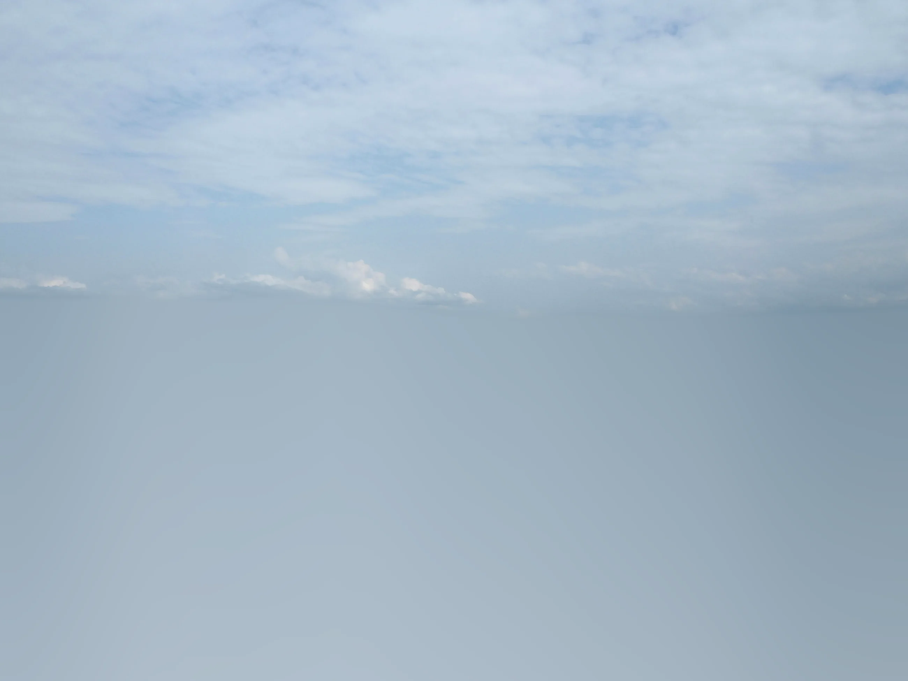
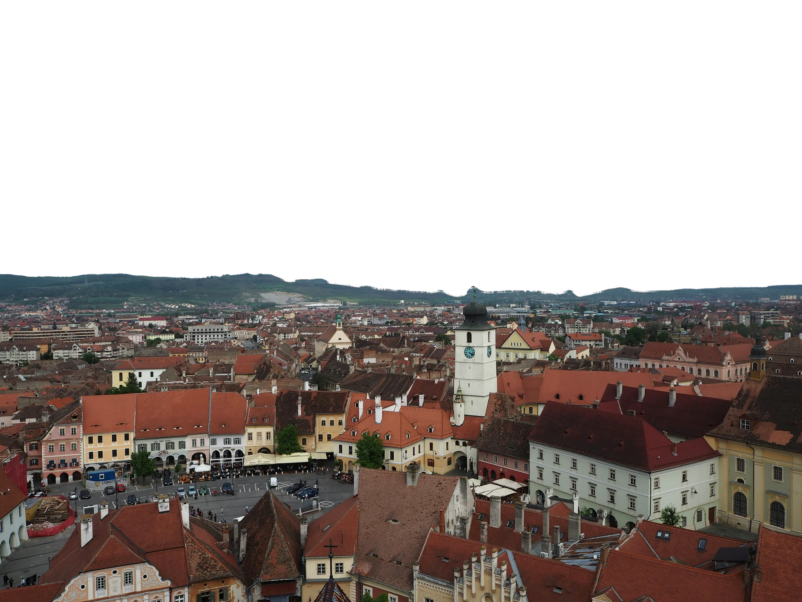

Facem curat în Sibiu,
la orice oră.
Case, birouri, scări de bloc și spații după renovare. Venim gratuit la evaluare, apoi stabilim prețul.
Ce curățăm
Alege ce ți se potrivește și pune în fișă. La final o trimiți cu un singur mesaj, iar noi venim la evaluare.
Curățenie generală
Toată casa, de sus până jos: praf, bucătărie, baie, geamuri și pardoseli. Pentru garsoniere, apartamente, case și vile.
Bună la mutare, primăvara sau înainte de sărbători.
Curățenie de întreținere
Revenim periodic, în ritmul pe care îl alegi, ca să nu se mai adune nimic între două curățenii mari.
Pentru case, apartamente și birouri.
După constructor și renovare
Praful fin de după rigips, urmele de vopsea și de silicon, ambalajele rămase. Te muți într-o casă terminată, nu într-un șantier.
Pentru spații noi sau renovate.
Scări de bloc
Holuri, trepte, balustrade și geamurile casei scării, curățate la un program stabilit cu asociația.
Pentru asociații de proprietari.
Birouri și spații comerciale
Birouri, magazine și spații de lucru curățate în afara programului vostru, ca dimineața să găsiți totul în ordine.
Pentru firme și magazine.
Curățenie hotelieră
Camere, holuri și spații comune pentru hoteluri și pensiuni, între plecarea unui oaspete și sosirea următorului.
Pentru hoteluri, pensiuni și apartamente în regim hotelier.
Spații verzi
Gazon tuns, curte îngrijită și grădină întreținută, ca exteriorul să arate la fel de bine ca interiorul.
Peisagistică și întreținere.
Curățătorie de perne eco
Pernele se ridică direct de la domiciliu și se curăță cu metode ecologice.
Cu ridicare de la domiciliu.
Fotografiile de pe site sunt ilustrative.
Cum lucrăm
Prețul nu se ghicește la telefon. Îl stabilim după ce vedem spațiul.
Ne suni sau ne scrii
La orice oră, inclusiv noaptea și în weekend. Programul nostru este nonstop.
Venim să vedem
Evaluarea la fața locului este gratuită. Ne uităm la spațiu și la ce trebuie făcut.
Primești prețul
Prețul îl stabilim după evaluare, nu din auzite. Îl știi înainte să începem.
Facem curat
Venim la data și ora stabilite împreună și lăsăm totul în ordine.
A mai rămas o singură trecere.
Spune-ne ce e de curățat.
Completează fișa și trimite-o ca mesaj sau sună direct. Programul nostru este nonstop.